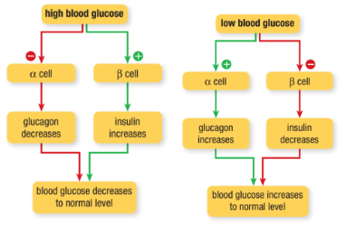

Regulating Blood Sugar
Sometimes, the endocrine system can have problems. If homeostasis is not maintained, some of the bodily processes may become imbalanced or may not be properly regulated.
- Many people have a problem with their blood glucose monitoring system, a condition called diabetes mellitus.
- In 2000, there were an estimated 2 million diagnosed cases of diabetes in Canada. More than 60,000 new cases are diagnosed each year.
- People who have diabetes, called diabetics, have a blood glucose level that may fluctuate abnormally, changing their metabolism and leading to some serious health risks and long-term problems.
- Diabetics must be aware of their blood glucose levels at all times.

People with diabetes may need to inject insulin to control their blood glucose levels.
Hormones that Control Blood Sugar
The two main hormones that control blood sugar are produced in the pancreas.
- The pancreas is a long gland, about the size of a hand, located between the small intestine and the spleen. Most of the pancreas forms an exocrine gland that secretes digestive enzymes into the small intestine, but about 2 % of the cells in the pancreas are specialized endocrine cells that form clusters called the islets of Langerhans.

Islets of Langerhans are endocrine cell clusters inside the pancreas that produce insulin and glucagon.
Hormones that Control Blood Sugar
Insulin is secreted by beta cells in the islets. A rise in the blood glucose level, such as after a meal, triggers the beta cells to release insulin. Insulin lowers the blood glucose level by instructing its target cells to uptake glucose from the blood.
Insulin acts mainly on skeletal muscles, liver cells, and adipose tissue (fat)
- In the liver, insulin inhibits the breakdown of glycogen into glucose, further helping to lower blood glucose levels. Insulin also lowers fatty acid levels by promoting fatty acid uptake and storage in adipose tissue, while inhibiting the breakdown of fats into fatty acids.
- Similarly, insulin lowers amino acid levels by promoting protein synthesis from amino acids, while inhibiting the breakdown of proteins into amino acids.

Glucagon raises the blood glucose level by stimulating the breakdown of glycogen into glucose in the liver. Glucagon also stimulates the breakdown of fats into fatty acids and of proteins into amino acids.
- Cells can use amino acids and other non-carbohydrates to synthesize glucose as well.
- This helps to maintain the blood glucose level during fasting.

Negative feedback mechanisms control the concentration of glucose in the blood and increase or decrease the secretions of both insulin and glucagon in order to maintain glucose homeostasis.
- The alpha and beta cells of the islets in the pancreas respond directly to the glucose level within their cytosol.
- When the blood glucose level is high, the beta cells turn up their insulin production while the alpha cells turn down their glucagon production.
- The opposing actions of insulin and glucagon work together through negative feedback mechanisms to maintain the blood glucose level will be shown on the next slide.

Callout
- The adrenal glands also play a role in controlling blood sugar.
- The adrenal cortex secretes steroid hormones called glucocorticoids.
- The adrenal cortex secretes steroid hormones called glucocorticoids.
Glucocorticoid (Three Major Mechanisms)
- First, they stimulate the synthesis of glucose from non-carbohydrate sources, such as fats and proteins.
- Second, they reduce glucose uptake by the body cells, except those in the central nervous system.
- Third, they promote the breakdown of fats and proteins, releasing fatty acids and amino acids into the blood as alternative fuels when the glucose supply is low.
- The secretion of glucocorticoids is ultimately under the control of the hypothalamus.
- A low glucose concentration in the blood, or an elevated level of epinephrine secreted by the adrenal medulla in response to stress, is detected in the hypothalamus.
- This leads to the secretion of adrenocorticotropic hormone (ACTH) by the anterior pituitary. ACTH then promotes the secretion of glucocorticoids by the adrenal cortex.
Callout
A blood glucose level that is too high can cause a condition called hyperglycemia.
- Symptoms of hyperglycemia may include thirst, frequent urination, sugar in the urine, vision problems, fatigue, and weight loss.
A blood glucose level that is too low can cause a condition called hypoglycemia.
- Symptoms of hypoglycemia may include nervousness, shaking, cold sweats, hunger, headaches, and weakness.

Diabetes is a disorder that affects the ability of the body to use glucose for energy.
Diabetes is characterized by high levels of glucose in the blood. This condition can occur for two reasons: the pancreas may produce no insulin or insufficient insulin, or the body cells are unresponsive to insulin and glucose does not enter the cells.
- Excess glucose in the blood is filtered by the kidneys and excreted in the urine.
- Diabetes mellitus, commonly known as diabetes, is a disease characterized by a high blood glucose level caused by problems with insulin production and/or action.
- Diabetes afflicts about 6 % of the world’s population.
- The three classic diabetes symptoms are frequent urination, increased thirst, and increased appetite.
- Type 1 diabetes occurs when the pancreas cannot produce insulin.
- This type of diabetes develops in younger children and adolescents and accounts for about 10 % of cases of diabetes. Type 1 diabetes is an autoimmune disease in which the immune system attacks the cells of the pancreas that produce insulin. The reason for this is not understood.
Callout
- Type 1 diabetes is sometimes called juvenile diabetes or insulin-dependent diabetes.
- Type 1 diabetics must be closely monitored, with frequent blood glucose tests, and treated with the daily administration of insulin, usually by injections or a pump.

Callout
- Type 2 diabetes usually develops after age 30 and occurs when the pancreas produces insufficient insulin or when the insulin receptors on the cell surface do not function properly so that the insulin produced is not effectively used by the cells.
- The exact cause of type 2 diabetes is not known.

Callout
Gestational Diabetes
- It occurs in about 2 to 10 % of pregnant women, due to a high blood glucose level that develops during pregnancy.
- It is usually a temporary condition, but it can increase the risk that both mother and child may develop diabetes later in life.